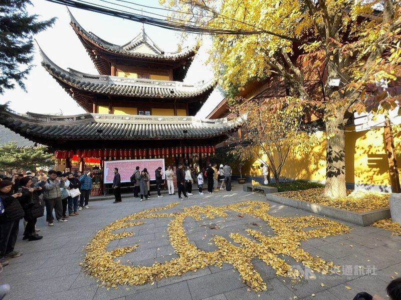
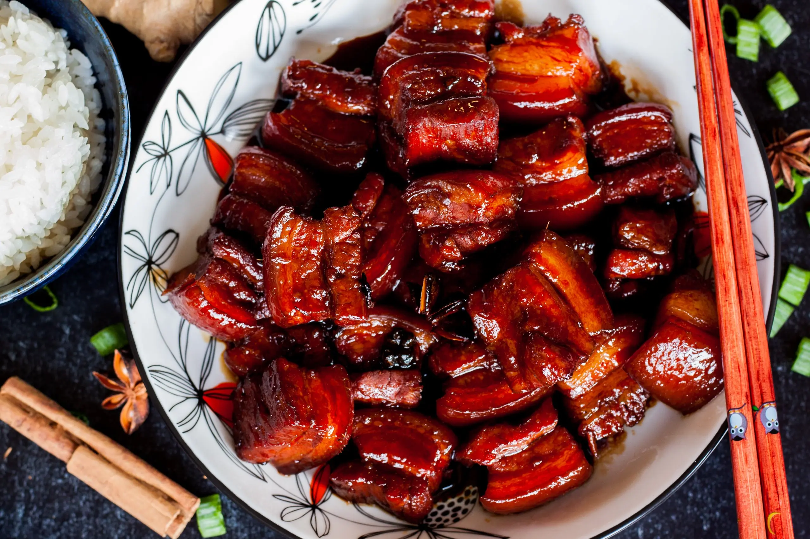

Shanghai is a city of contrasts—where ancient alleyways (hutongs) wind past futuristic skyscrapers, and steaming bowls of xiaolongbao sit beside artisanal lattes. My 5-day trip here felt like a love letter to its chaos and charm: I watched the sunrise over the Bund’s colonial-era buildings, got lost in the labyrinthine lanes of Tianzifang, and stayed up late eating street food in a neon-lit night market. This isn’t just a “big city”—it’s a place where every corner tells a story, blending China’s rich history with global modernity.

What struck me most was how Shanghai embraces both its past and present. One morning, I’d be wandering the 1,700-year-old Longhua Temple, listening to monks chant, and by afternoon, I’d be sipping coffee in a rooftop café with views of the Oriental Pearl Tower. The food was another highlight: from delicate xiaolongbao (steamed soup dumplings) that burst with broth to crispy shengjian mantou (pan-fried pork buns) that left my fingers greasy in the best way, every meal felt like a celebration of Shanghai’s culinary heritage.
Whether you’re a history buff, a foodie, or just someone who loves exploring new cities, Shanghai has something for you. Below, I’ll break down my favorite spots—from iconic landmarks to hidden gems—and share essential tips to make your trip smooth. Plus, I’ll dive into the details of the three natural/scenic spots, three historic sites, and three must-try foods that defined my time here.

Tip 1: Spring (March–May): Mild temperatures (10°C–20°C), blooming cherry blossoms in Gucun Park, and fewer crowds than summer.
Tip 2: Autumn (September–November): Crisp air (15°C–25°C), clear skies for Bund photos, and perfect for outdoor activities like biking along the Huangpu River.
Tip 3: Avoid Summer (June–August): Hot (28°C–35°C) and humid, with frequent rain; winter (December–February) is cool (5°C–12°C) but cozy, great for indoor attractions like museums.
Tip 1: Getting to Shanghai:
Fly to Shanghai Pudong International Airport (1 hour to city center via Maglev Train, 50 CNY, or taxi ~150 CNY) or Hongqiao International Airport (20 minutes to city center by subway).
Tip 2: Getting Around:
Metro: Subway (single ride 3–8 CNY) for short trips in areas like Tianzifang.
Bikes: shared bikes (2 CNY/30 minutes)
Taxis/Didi: taxis (start at 14 CNY)
Tip 1: Get a Metro Card: Shanghai’s subway system is fast and covers almost all attractions—buy a reusable Metro Card (20 CNY deposit + load money) to avoid lineups for single tickets.
Tip 2: Book Tickets in Advance: Popular spots like the Oriental Pearl Tower and Shanghai Museum sell out fast, especially on weekends—book 1–2 days ahead via their official websites.
Tip 3: Eat Like a Local: Skip tourist traps on the Bund; head to neighborhoods like Xintiandi or Yunnan Road Night Market for authentic snacks. Look for stalls with long lines—they’re usually the best.